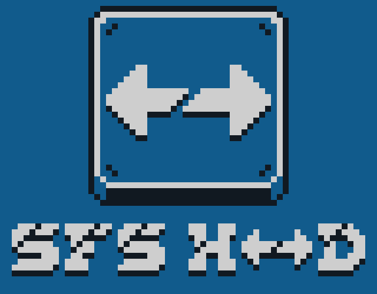
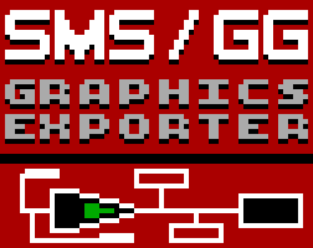
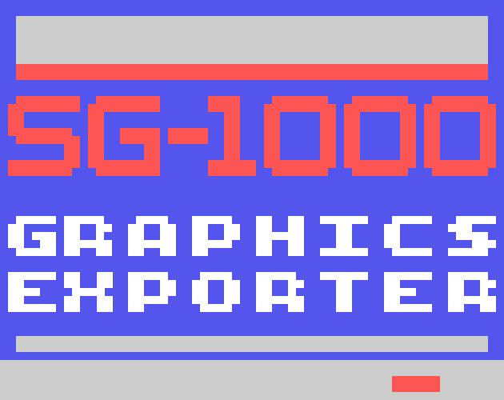
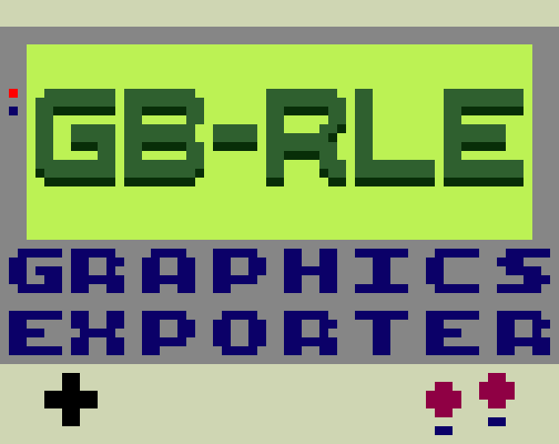
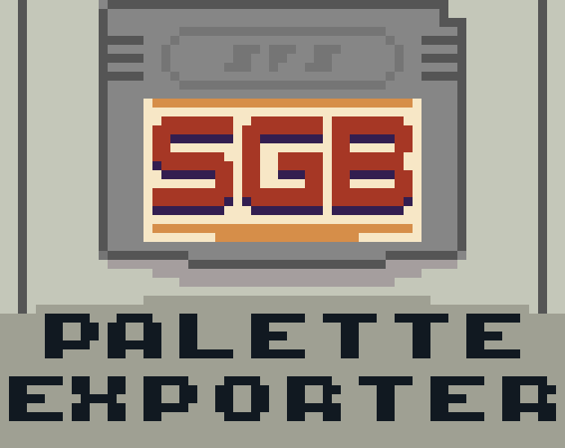
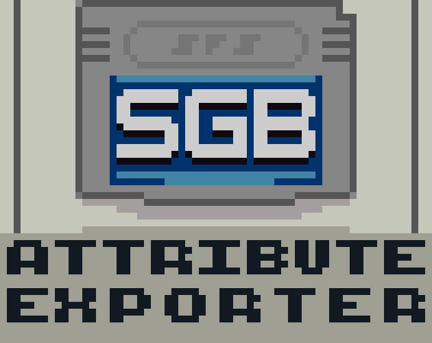
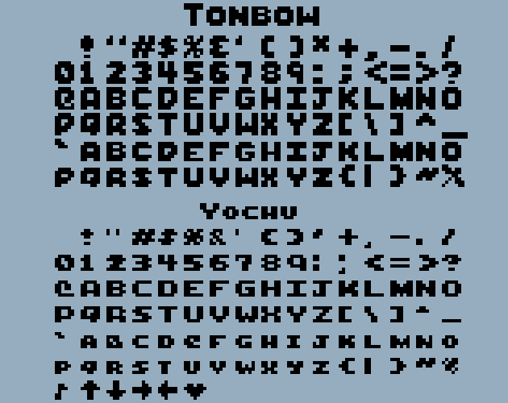

SFS-HD Multi-Base Calculator
Calculator • Numeric Base Conversion • PC/Mac/Linux

This is a tool for those working with 8 and 16-bit systems. SFS-HD allows for quick
numeric base conversion at a glance, always displaying results in decimal, hexadecimal and binary, as well as
all the basic calculations you could want when working with 8-bit hardware.
If you're a retro developer, the SFS-HD is a must!
Download →
SMS/GG Graphics Exporter
Aseprite Tool • Graphics Data Converter • SMS & Game Gear

Convert Aseprite files into data that can be used to create graphics on the Sega Master System and Sega Game Gear! With a special feature utilizing Aseprite's
slice feature, you can now set the priority, sprite palette, and software flag bits on a per-tile basis! Horizontal and vertical tile mirroring is also supported!
live out your SMS and GG development dreams and craft beautiful graphics using this Aseprite script!
Download →
SG-1000 Graphics Exporter
Aseprite Tool • Graphics Data Converter • SG-1000/MSX

Convert Aseprite files into data to be used in SG-1000 and MSX games! This script takes an image designed
in Aseprite and, as long as the image obeys the graphical limitations of the SG-1000, it is converted into
three .inc files that can be imported into SG-1000 projects for quick graphics implementation!
Download →
Game Boy Tile Converter/Compressor
Aseprite Tool • RLE Tile Compression • Game Boy

Turn Aseprite files into a run length encoding compressed .inc file
using Aseprite's scripting feature. This is a tool we designed specifically
for our Game Boy projects, and they wouldn't have been possible without it!
Download →
Super Game Boy Palette Exporter
Aseprite Tool • Palette Data Packets • Super Game Boy

Convert Aseprite palettes into Super Game Boy data packets for use
with creating custom SGB palettes for your Game Boy games. This is another one
that streamlines graphic development for Game Boy games, specifically those supporting the Super Game Boy.
Download →
Super Game Boy Attribute Exporter
Aseprite Tool • Attribute Packets • Super Game Boy

Super Game Boy Attributes give compatible games their ability to have more than 4 colors on screen at once.
This one pairs great with the Super Game Boy Palette Exporter for creating beautifully colorful scenes
on a system that only really supports 2-bit color!
Download →
Tonbow Font Series
Font • Downloadable • For use with any system

We feel that the Tonbow font series captures the fun, light-hearted vibe that we want our games to give off, while still remaining stylish and legible.
Feel free to download the font pack and use it to your heart's content, just make sure to credit us somewhere in your project!
Download →